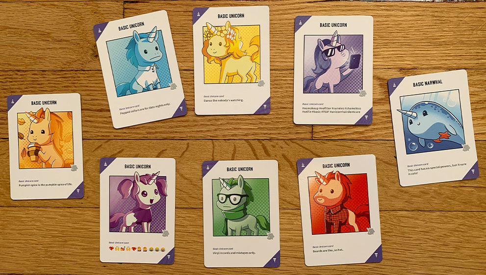

Back to the BYOWP Resources Page
My Board & Card Game Page
I really like board and card games!
About My Website
This is some information about my favorite board games and card games!
My Top 5 Board Games
- Unstable Unicorns
- Settlers of Catan
- Ticket to Ride
- Trekking the National Parks
- Scrabble
What I like about my favorite game, Unstable Unicorns
- The artwork is really cute
- It requires strategy to play
- It is easy to learn how to play
- It is a fun game to play with a group of people
Release Dates of my Favorite Games
| Name |
Publish Date |
| Unstable Unicorns |
2017 |
| Settlers of Catan |
1995 |
| Ticket to Ride |
2004 |
Links to some game sites
Board Game Geek
Games for sale on Amazon
Best Board Games in 2022
Here is a picture!
